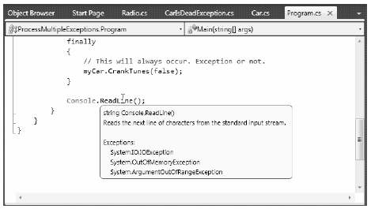

Given that a method in the .NET Framework could throw any number of exceptions under various circumstances, a logical question is, “How do I know which exceptions may be thrown by a given base class library method?” The ultimate answer is simple: consult the .NET Framework 4.0 SDK documentation. Each method in the help system documents the exceptions a given member may throw. As a quick alternative, Visual Studio 2010 allows you to view the list of all exceptions thrown by a base class library member (if any) simply by hovering your mouse cursor over the member name in the code window (see Figure 7-2).
Figure 7-2. Identifying the exceptions thrown from a given method
For those coming to .NET from a Java background, understand that type members are not prototyped with the set of exceptions they may throw (in other words, C# does not support checked exceptions). For better or for worse, you are not required to handle each and every exception thrown from a given member.